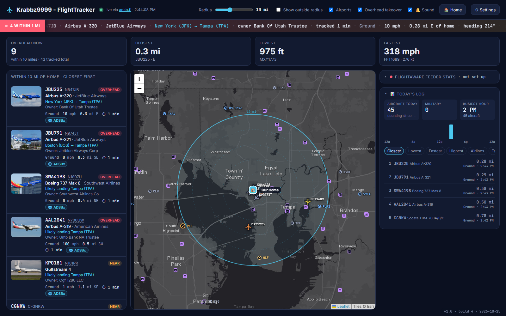

See every plane over your house
A live map of the aircraft around your home, with photos, routes and owners. When one flies right overhead, it takes over the screen and tells you what it is.

Install in two minutes
A small installer that doesn't need admin rights. The app runs a dashboard on your PC and opens it in your browser.
-
Download and install
Get Krabbz9999-FlightTracker-Setup.exe with the button above and run it.
It installs just for you, with no admin password, into
C:\Users\Public\Apps\Krabbz9999-FlightTracker, and adds it to your Start menu. You can also tick desktop shortcut and start when I sign in.Windows may say "Windows protected your PC" because the app isn't code-signed. Click More info, then Run anyway.
-
Run it
It starts when the installer finishes, or from the Start menu any time. A ✈ icon appears by the clock and the dashboard opens in your browser.
-
Enter your ZIP code or address
The first time, it asks where home is. Type your ZIP code or address, pick it from the list, then Save. Planes start showing up right away.
It only asks once. Change it any time in ⚙ Settings.
What you get
Everything updates every few seconds from the public adsb.fi feed of aircraft transponder signals.
◎Live map
Every aircraft within your chosen radius (20 miles to start), colored by altitude, with airports, your home and an optional office pin.
⚠Overhead alert
When a plane passes within a mile, a full-screen close-up shows its path, where it's from and going, and when it'll be closest. A chime and voice say "Overhead now!"
▣Photos and details
A photo of the actual plane when one exists, plus maker and model, airline, owner, route, altitude, speed and how long it's been tracked.
NTail numbers
Click any registration like N367FX for owner and registration details and a map of its flight path.
★Military and emergencies
Military and other interesting aircraft are highlighted, with a pop-up when one comes near. Emergency squawks get a red alert.
▤Today's log
How many planes flew by today, the busiest hour, and leaderboards for closest, lowest, fastest, highest, airlines and aircraft types.
⌖ADS-B Exchange
Open ADS-B Exchange's live view of any plane without leaving the dashboard.
⇄Whole-house
Leave it running on one PC and open it from any phone, tablet or TV browser at home: http://<PC name>:8090.
⌂Feeder stats
Already feed FlightAware with your own receiver? Add your username in Settings to see your rank and daily counts.
Keeps itself up to date
About a minute after it starts, and every 6 hours after that, the app checks for a new version. If there is one, it downloads it, checks it's intact, swaps itself and restarts. Any dashboard you have open reloads onto the new version.
The version and build number are in the bottom-right corner. You can check now, or turn automatic updates off, under ⚙ Settings → Updates.
Share it
Send people this page. Each person's copy keeps its own home address and settings, so nothing of yours goes with it.
https://flighttracker.loves3d.comQuestions
The short answers.
Do I need an antenna or receiver?
No. Aircraft come from adsb.fi, a free public network of volunteer receivers, so it works anywhere with an internet connection.
Is it safe? Why does Windows warn me?
Windows warns about any app that isn't signed with a paid certificate. The full source code is public on GitHub, so you can see exactly what it does. It only talks to the public services listed below.
Where is my information kept?
Your settings stay on your PC, in a settings.json file next to the app. When you search for your address, it's sent once to OpenStreetMap to find its map coordinates. After that, only those coordinates are sent, to adsb.fi, to ask which planes are nearby.
Does it work on a Mac or phone?
The app runs on Windows, and the dashboard opens in a browser on that PC.
How do I stop it, or start it with Windows?
Close the black console window to stop it. To start it automatically, press Win+R, type shell:startup, and put a shortcut to the app in the folder that opens.
Can I see full FAA owner records?
Yes, for US aircraft. Download the FAA's ReleasableAircraft.zip (about 60 MB) yourself, put it next to the app and restart it. Street addresses are never shown.
Data and credits
Look A Plane! is free for personal, non-commercial use and stands on these services. Each has its own terms.
| What | Where it comes from |
|---|---|
| Live aircraft | adsb.fi open data |
| Photos | Planespotters.net (photographers credited in the app), or a stock model photo from Wikipedia |
| Aircraft and owners | adsbdb, optional FAA registry file |
| Routes | adsb.lol route data and adsbdb |
| Airports | OurAirports (public domain) |
| Maps | Esri World Dark Gray, drawn with Leaflet |
| Address search | OpenStreetMap Nominatim |